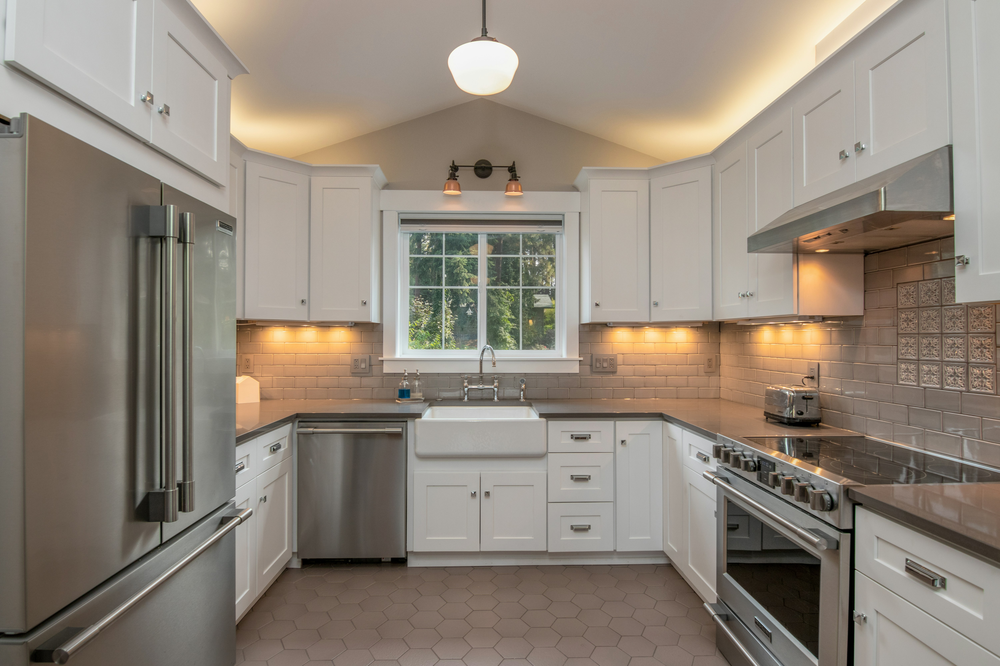

INŠPIRÁCIA
Svetlé drevo a čisté línie
Kuchyňa v prirodzených tónoch s jednoduchými čelami.

Návrhy a inšpirácia
Ukážky interiérov a nápady na kombinácie materiálov. Fotografie sú dočasné ilustračné placeholdery.
Kuchyňa v prirodzených tónoch s jednoduchými čelami.

Jemný kontrast dreva, svetlých plôch a textúr.

Priestranné riešenie pre spoločné varenie aj stolovanie.

Jednoduché plochy a výraznejší materiálový detail.

Ukážka čistého riešenia s dôrazom na každodennú praktickosť.

Materiálová kombinácia, ktorá pôsobí prirodzene a nadčasovo.
Všetky fotografie sú dočasné ilustračné ukážky, nejde o realizácie firmy.